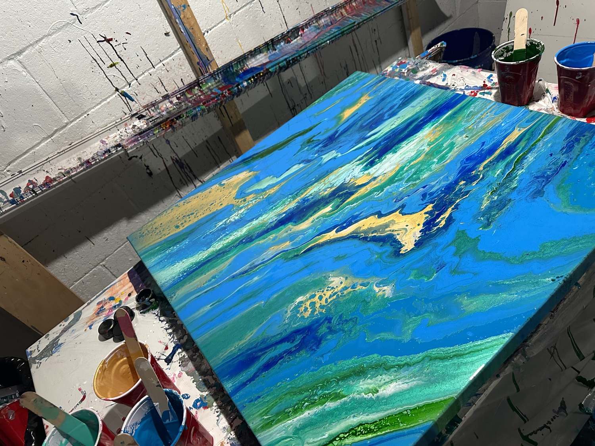
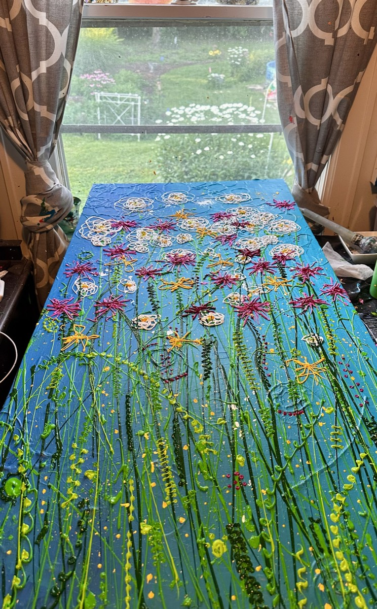
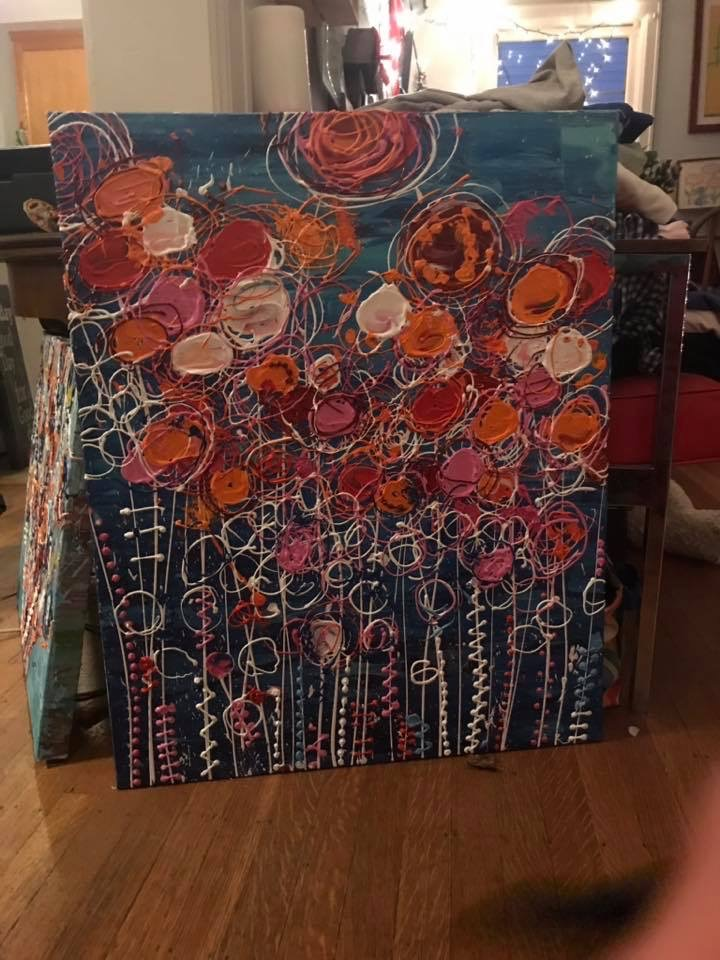
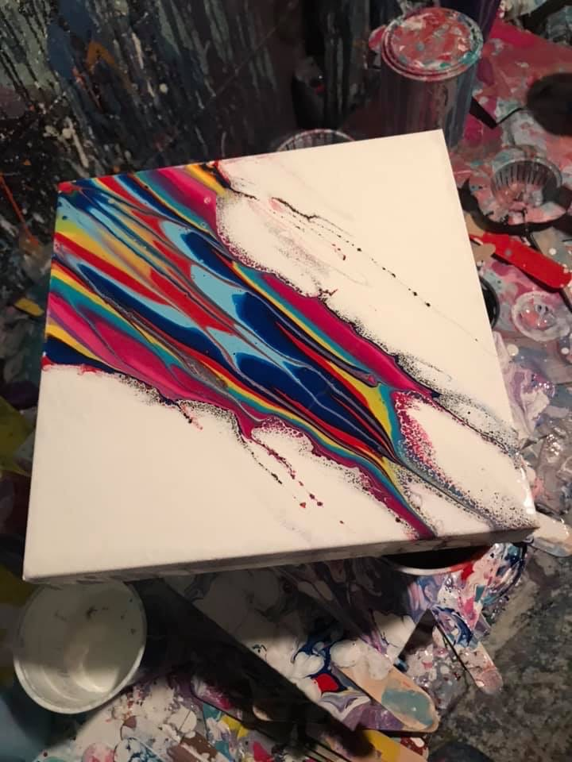
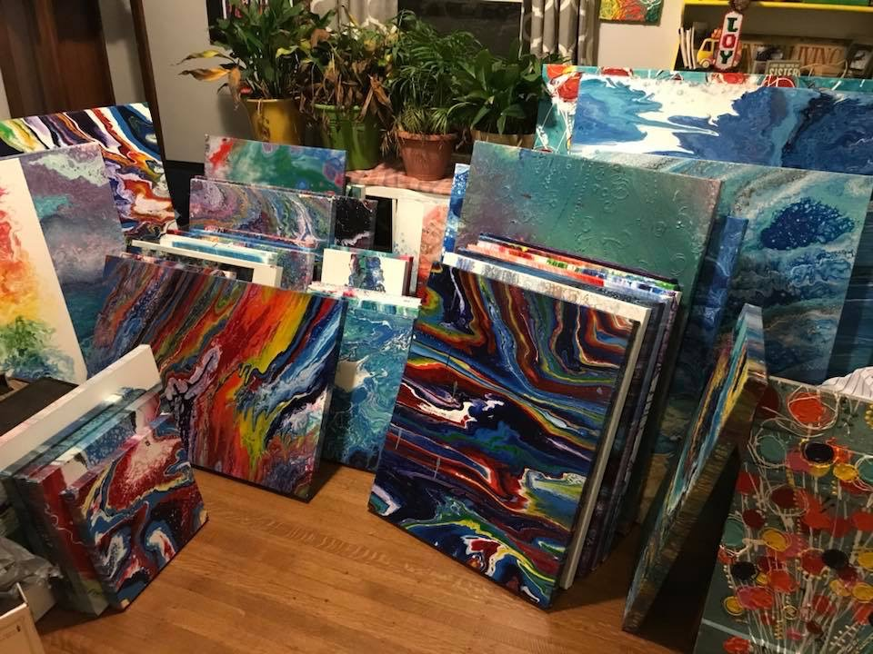
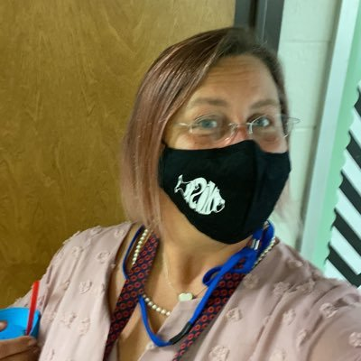

01 / NATURE
A little on
the wild side.
Animals, leaves, and organic shapes bring the outdoors into a world of vivid color.
ARTIST · EDUCATOR · COLOR ENTHUSIAST
Welcome to the world of Jennifer Paulette Day.
Where art feels like possibility, kindness belongs in the classroom, and life has a pretty great soundtrack.
Jennifer Paulette Day · Portrait shared by Jenn, April 2021
01 / MEET JENN
Jennifer Paulette Day is an artist and art educator whose world connects the studio, the classroom, and her Indiana community.
Known creatively as JennDay, she brings a love of bright color, nature, and playful imagination to painting, illustration, mixed media, and decorative craft. Her creative life has roots in Indianapolis and the arts-rich landscape of Brown County.
Her teaching experience includes Indianapolis Public Schools and Brown County Junior High School. At the heart of that work is a simple belief: art can be a welcoming place to explore, find your voice, and feel a sense of belonging.
02 / HER COLORFUL WORLD
Nature, imagination, and everyday wonder.
The things that make her creative world bloom.
01 / NATURE
Animals, leaves, and organic shapes bring the outdoors into a world of vivid color.
02 / IMAGINATION
Whimsical figures and expressive details make space for a joyful, personal way of seeing.
03 / MAKING
From painting and illustration to mixed media and decorative craft, making is a way to connect.
03 / THE GALLERY WALL
Original painting from Jenn’s own studio.
Photographs shared by her family.






04 / ART & TEACHING
For Jenn, teaching art is about helping young people feel comfortable enough to try.
Drawing skills matter. So do curiosity, encouragement, and the freedom to make something that feels like you. Her approach connects foundational art skills with student interests, from animals to imaginative characters.
A question, an unexpected color, a new idea. That’s a good place to begin.
Art gives students another way to express themselves and connect with others.
Exploring, practicing, and trying again are part of the creative experience.
Ask your young artist what they enjoyed making or what surprised them. Set out a few simple supplies. Let them choose the colors. An interested listener and a little room to explore can turn an ordinary afternoon into a creative one.
05 / FOR FAMILIES
Answered here, so the first conversation can be
about your artist — not the logistics.
Art has been the through-line of Jenn’s working life — in the classroom, in the community, and at the studio table.
She has taught art in Indianapolis Public Schools and at Brown County Junior High School in Nashville, Indiana, within the landscape of the historic Brown County Art Colony — the plein-air tradition founded by the American Impressionist T.C. Steele.
Her philosophy is steady and simple: the art room is a sanctuary. The work is student-centered, drawing on the subjects young people already love — animals, characters, imagined worlds — to build real technique and the confidence to use it. As an artist she works in mixed media, illustration, painting, and decorative craft, with bright, nature-rooted color throughout.
Just a willingness to get a little messy — the studio provides the materials. If a project ever needs something from home, a note goes home first. Supply wish-lists, when they exist, come through the school and are never required.
Sometimes, gloriously yes. Smocks and table rules cover most of it, but art that never touches a sleeve is usually art that never took a risk. Dress-for-mess days are flagged in advance.
That’s the whole point. The art room runs on the idea that there is no “not an art person.” Beginners get foundations; confident makers get pushed further. Every student is met exactly where they are.
Only with permission. Student work is celebrated in school displays and community art shows, but nothing goes on a wall or a website without a family’s OK first — and names are never attached without it.
The quickest route is through the school office. For a friendly browse first, her public studio accounts are linked in the footer below.
06 / THE GOOD GROOVE
Yes, there’s a little Phish in the picture.
Jenn’s love of Phish is part of her colorful life. It’s the joy of live music, the surprise of improvisation, and the feeling of being part of a community that loves the same groove.
That spirit belongs here, too: stay curious, welcome a happy surprise, and leave some room for the unexpected.
GOOD MUSIC. OPEN HEARTS. COLOR EVERYWHERE.07 / YOUR TURN
No perfect lines required. Pick a color, make a mark, and see where it goes.
Just for the joy of it. Your doodle stays in this browser tab unless you choose to save it.
Thanks for spending a little time in Jenn’s world.
Back to the sunshine